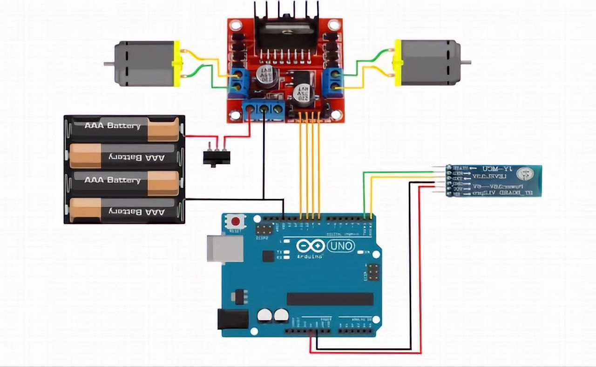

Bluetooth Car using Arduino
What we'll be discussing
1. Inputs & Outputs in Arduino
Arduino basically has two types of pins namely Digital & Analog pins
- Digital pins use 1's and 0's data (i.e) HIGH or LOW.
- Analog pins use integers 0 to 1023 as data.
Today we will learning about digital pins...
2. Using LED with Arduino
Now let's see how to control the inbuilt LED on the Arduino
- First, Connect the Arduino with your computer using the programming cable
- Next, Open the Arduino IDE application
- Open the Blink example program and click run
- You will observe that the LED in the Arduino board starts to blink with a certain interval
- You can also change the interval at which the LED blinks , by changing it in the code

Next Let's see how to integrate the motor driver with Arduino...
3. Integrating Motor Driver
Integration of Motor Driver with the Arduino
- The motor driver we use is L298N motor driver
- It has a total of 6 pins (excluding the power supply pins).
- The pins at the end, control the speed of the motor and the pins at the center turn on and off the motor.
- Today we will only see about the center 4 pins.
- The L298N Motor driver can control only 2 motors.
-
In the total 4 pins each 2 pins control a single motor
- When the input to first pin is high and the input to other pin is low the motor spins in particular direction.
- When the input to pins are interchanged motor spins in the opposite direction.
- The same rules go for the other 2 pins.

Next Let's see how to integrate the bluetooth module with Arduino...
4. Integrating Bluetooth Module
We will be using a Bluetooth module for data transmission between your mobile device and your Arduino board
- The Bluetooth module we are using is HC-05.
- The Bluetooth module contains 6 pins.
-
The pins at the end are
ENABLEandSTATEpins which control the inbuilt LED in the Bluetooth module. -
The pins at the center are
VCC,GND,TXandRX. -
The
VCCandGNDpins are the power pins of the module. -
The
TXandRXpins are used for data transmission.


Now Let's see how to combine everything into a car
5. Combine everything to build the car
Connect everything according to the circuit diagram
Follow the code below and upload it to the arduino board
After building the car download the below application